-
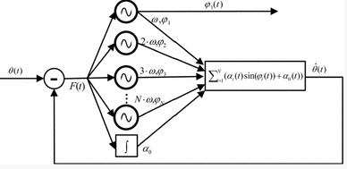
An oscillator-based smooth real-time estimate of gait phase for wearable roboticsAutonomous Robots, March 2017, Volume 41, Issue 3, pp 759–774
-
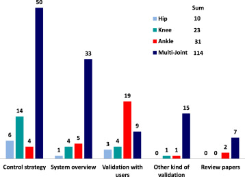
Review of assistive strategies in powered lower-limb orthoses and exoskeletonsRobotics and Autonomous Systems, Volume 64, February 2015, Pages 120–136
-
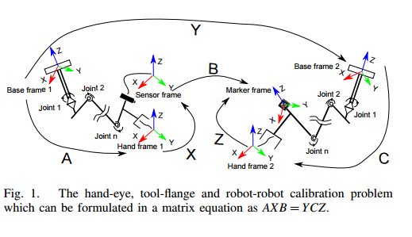
Towards Simultaneous Coordinate Calibrations for Cooperative Multiple Robots2014 IEEE/RSJ International Conference on Intelligent Robots and Systems
-
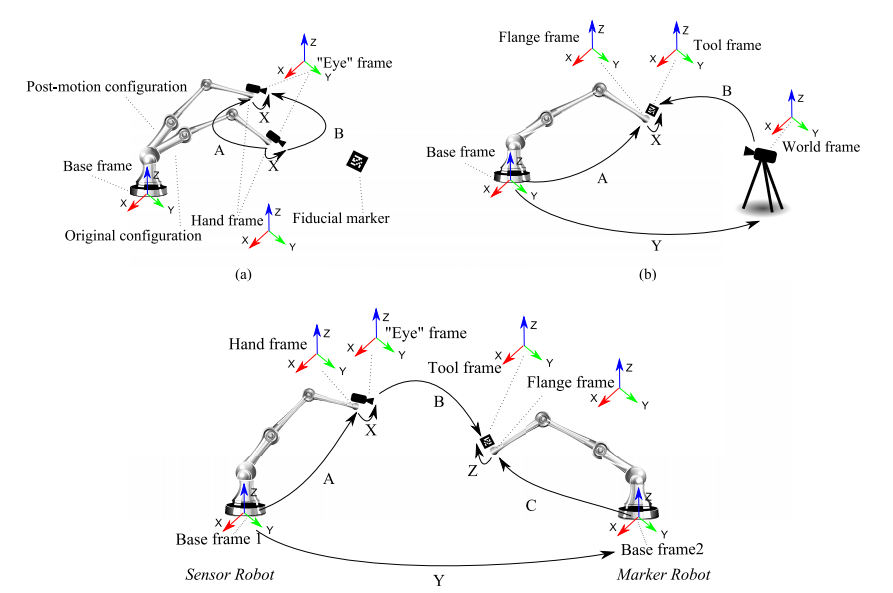
Simultaneous Hand–Eye, Tool–Flange,and Robot–Robot Calibration for Comanipulation by Solving the AXB = YCZ ProblemIEEE TRANSACTIONS ON ROBOTICS, VOL. 32, NO. 2, APRIL 2016
-
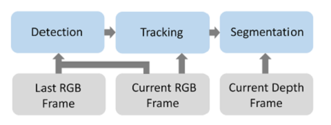
Improving RGB-D SLAM in dynamic environments: A motion removal approachRobotics and Autonomous Systems, vol. 89, pp. 110-122, 2017. PDF
-
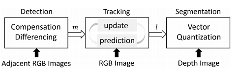
Motion removal from moving platforms: An RGB-D data-based motion detection, tracking and segmentation approachin 2015 IEEE International Conference on Robotics and Biomimetics (ROBIO), 2015, pp. 1377-1382.
-
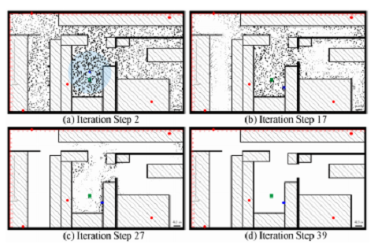
Multiple moving objects tracking for automated visual surveillancein Information and Automation (ICIA), 2015 IEEE International Conference on, 2015, pp. 1617-1621.
-
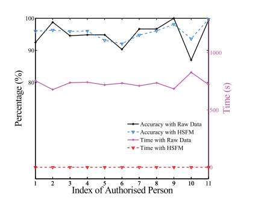
Person Verification based on Skeleton Biometrics by RGB-D CameraIn Robotics and Biomimetics (ROBIO), 2014 IEEE International Conference on, , pp. 671-676. IEEE, 2014
-
 A vision-based mobile robot localization methodIn Robotics and Biomimetics (ROBIO), 2013 IEEE International Conference on, pp. 2703-2708. IEEE, 2013.
A vision-based mobile robot localization methodIn Robotics and Biomimetics (ROBIO), 2013 IEEE International Conference on, pp. 2703-2708. IEEE, 2013.- 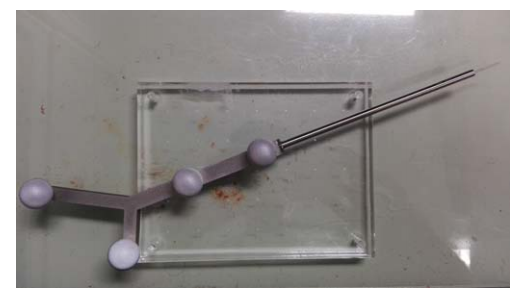
Accuracy assessment of an N-ocular motion capture system for surgical tool tip tracking using pivot calibrationInformation and Automation (ICIA), 2016 IEEE International Conference on, pp.1639-1634. IEEE ,2016- 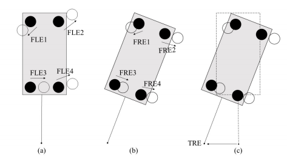
Estimation of target registration error considering small inhomogeneous and anisotropic bias in fiducial localizer errorRobotics and Biomimetics (ROBIO), 2016 IEEE International Conference on,pp. 62-67. IEEE,2016- 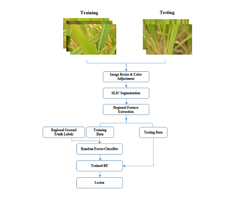
Automatic Lesion Segmentation from Rice Leaf Blast Field Images based on Random ForestIn Real-time Computing and Robotics (RCAR), IEEE International Conference on, pp. 255-259. IEEE, 2016.- 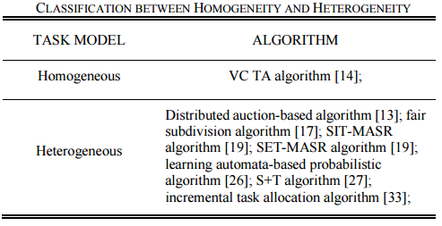
A survey and analysis of task allocation algorithms in multi-robot systems2013 IEEE International Conference on Robotics and Biomimetics (ROBIO)- 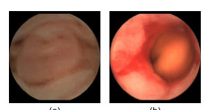
A deep convolutional neural network for bleeding detection in Wireless Capsule Endoscopy images2016 38th Annual International Conference of the IEEE Engineering in Medicine and Biology Society (EMBC)- 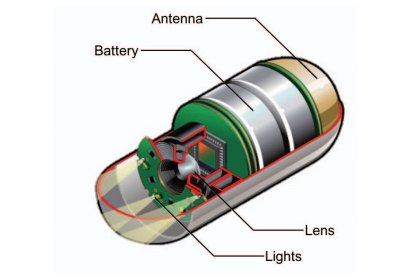
GI bleeding detection in wireless capsule endoscopy images based on pattern recognition and a MapReduce framework2016 IEEE International Conference on Real-time Computing and Robotics (RCAR)- 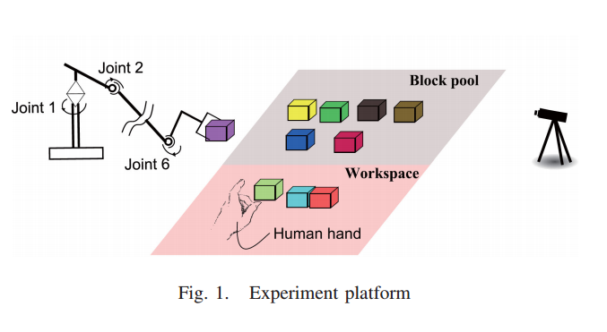
Human robot cooperation based on human intention inferenceRobotics and Biomimetics (ROBIO), 2014 IEEE International Conference on.- 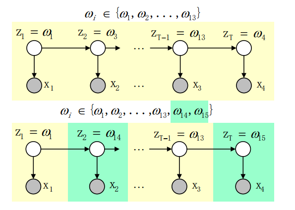
Evolving hidden Markov model based human intention learning and inferenceRobotics and Biomimetics (ROBIO), 2015 IEEE International Conference on.- 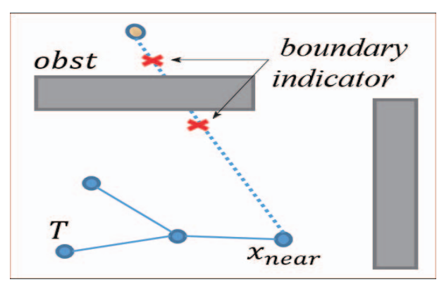
Variant step size RRT: An efficient path planner for UAV in complex environmentsIn Real-time Computing and Robotics (RCAR), IEEE International Conference on, pp. 255-259. IEEE, 2016.- 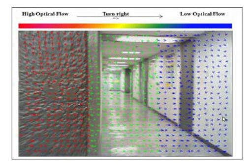
Obstacle Avoidance for Quadrotor Using Improved Method Based on Optical flow2015 IEEE International Conference on Information and Automation . - 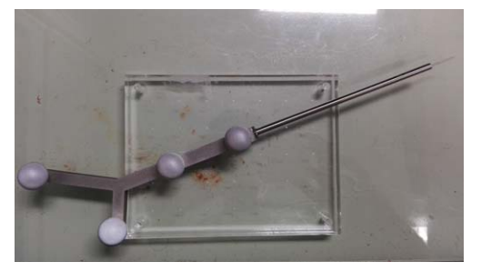